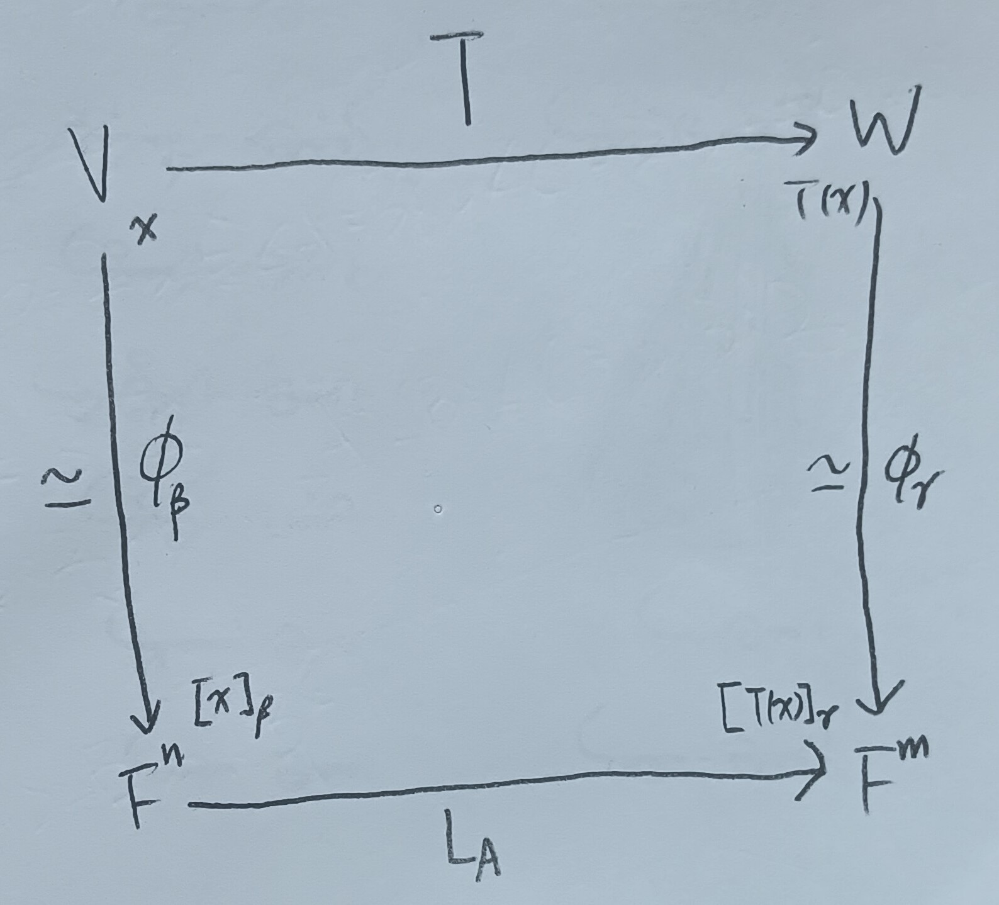

這份筆記是關於矩陣的秩與其相關性質。
這裡的行與列依循的是台灣的翻譯習慣，即行對應到英文的Column，而列對應到英文的Row。
矩陣的秩
定義 1：矩陣的秩 (Rank of Matrices)
給定矩陣\(A\in M_{m\times n}(F)\)，我們將\(A\)的秩定義為 \[ \mbox{rank}(A)=\mbox{rank}(L_A) \]
註記 2
給定\(n\times n\)矩陣\(A\)，由這裡的定理3可知\(A\)可逆 iff. \(L_A\)可逆，且由這裡的性質1-6知 \[ \mbox{rank}(A)=\mbox{rank}(L_A)=\dim(F^n)=n \]
定理 3
給定線性映射\(T:V\to W\)，其中\(V,W\)為有限維向量空間，且\(\beta,\gamma\)分別為\(V,W\)的有序基底，則 \[ \mbox{rank}(T)=\mbox{rank}\left([T]^\gamma_\beta\right) \]
證明：令\(\dim V=n\), \(\dim W=m\)，並令\([T]^\gamma_\beta=A\)。我們希望說明\(\mbox{rank}(L_A)=\mbox{rank}(T)\)。令\(\phi_\beta:V\to F^n\)和\(\phi_\gamma:W\to F^m\)分別為同構映射(由這裡的註記2知這樣的同構映射存在)，我們考慮如下的圖1。
在上圖1中，我們有 \[
[T(x)]_\gamma=[T]_\beta^\gamma[x]_\beta=A[x]_\beta
\] 故\(L_A\phi_\beta=\phi_\gamma
T\)，即 \[
\phi_\gamma^{-1}L_A=T\phi_\beta^{-1}
\] 接著，我們希望說明\(\phi_\beta(N(T))=N(L_A)\)。我們分兩個部分說明：
1. 給定\(y\in\phi_\beta(N(T))\)，即\(y=\phi_\beta(x)\)，其中\(T(x)=0\)。則 \[
L_A(y)=L_A(\phi_\beta(x))=\phi_\gamma(T(x))=0
\] 故\(y\in N(L_A)\) i.e. \(\phi_\beta(N(T))\subseteq N(L_A)\)。
2.
給定\(y\in\phi_\beta^{-1}(N(L_A))\)，則\(y=\phi_\beta^{-1}(x)\)，其中\(L_A(x)=0\)。則 \[
T(y)=T\left(\phi_\beta^{-1}(x)\right)=\phi_\gamma^{-1}(L_A(x))=0
\] 即\(y\in N(T)\) i.e. \(\phi_\beta^{-1}(N(L_A))\subseteq N(T)\)
i.e. \(N(L_A)\subseteq
\phi_\beta(N(T))\)。
綜合以上，即有\(\phi_\beta(N(T))=N(L_A)\)。故由這裡的註記2知
\[
\dim(N(T))=\dim(\phi_\beta(N(T)))=\dim(N(L_A))
\] 故由維度定理(這裡的定理8)，我們即有\(\mbox{rank}(T)=\mbox{rank}(L_A)\)。QED
定理 4
給定\(m\times n\)矩陣\(A\)，並給定\(m\times m\)可逆矩陣\(P\)與\(n\times
n\)可逆矩陣\(Q\)。則：
1.
\(\mbox{rank}(AQ)=\mbox{rank}(A)\)。
2. \(\mbox{rank}(PA)=\mbox{rank}(A)\)。
3.
\(\mbox{rank}(PAQ)=\mbox{rank}(A)\)。
證明：第3.點可以由第1.、2.點直接推出，故這裡只證明前兩點。
1. 我們有 \[
R(L_{AQ})=R(L_AL_Q)=L_AL_Q(F^n)
\] 其中\(L_AL_Q(F^n)\)指的是把\(F^n\)塞進\(L_AL_Q\)這個函數裡。而又因為\(Q\)是同構映射，故\(L_Q(F^n)=F^n\)，則 \[
R(L_{AQ})=L_AL_Q(F^n)=L_A(F^n)=R(L_A)
\] 故\(\mbox{rank}(AQ)=\mbox{rank}(A)\)。
2.
我們有 \[
R(L_{PA})=R(L_PL_A)=L_PL_A(F^n)=L_P(R(L_A))
\] 然而又因為\(L_P\)是同構映射，故\(L_P(R(L_A))\simeq R(L_A)\)。故由這裡的註記2可知
\[
\dim(L_P(R(L_A)))=\dim(R(L_A))
\] 故\(\mbox{rank}(PA)=\mbox{rank}(A)\)。QED
註記 4-1
矩陣經過基本列運算後秩不變。(因為對應的基本矩陣是可逆的)